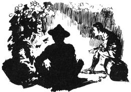

Scout's Honor
Learning about America by studying the various editions of the Boy Scout Handbook.
By Jack Hope
September/October 1990
The handbooks tell all.
It is clear that oUr nation has never quite embraced the idealised image the Boy Scouts of America, who vow to be simultaneously trustworthy, loyal, helpful, friendly, courteous, kind, obedient, cheerful, thr ifty, brave, clean and reverent. Instead, we tend to feel more at home with a cynical vision of the khaki-clad, red-neckerchiefed lad-be he Tenderfoot or Eagle Scout-who every so often hacks away at one of the maples on Main Street with his official scout ax, leads his troopmates in cigarette-smoking ...or worse.
Curiously, no one seems to know which of these images is closer to the truth. And for each of us non-scouts, our vision of the Boy Scouts of America typically depends on our own encounters with this largest of American youth groups-whether one of them has heroically saved us from fire or drowning (which they manage to do roughly too times a year, or whether a troop of them has utterly destroyed our backpacking trip into supposed solitude by swarming busily over the land like locusts.
But in search of the heart and soul of the American Boy Scout there is no surer place to begin than The Boy Scout Handbook, the organization's book of principles, pledges, crafts, knots and merit badges, all tied into one. For the handbook-which made its first appearance in 1911 and has been revised every decade or so, either by committee or by carefully chosen authors-sets not only the standards but the tone of what scouting is for a disparate collection of 46,790 scout troops and scoutmasters across the country. In the words of chief scout executive Ben Love, the handbook is the scout's "book of life."
Predictably, each scout handbook reflects its era. The 1911 original, for example, contains only two single-page passages formally entitled Conservation. The first says, essentially, that trees and other natural resources are to be well-cared-for because they can be converted into Gross National Product; but the second "conservation" section consists of a stern, though highly euphemistic lecture on a growing boy's need to conserve "the sex fluid,"whose unwarranted discharge comes at the cost of strength, health and character. Today, the newly revised, 1990 handbook, which most scout leaders feel is the best and most radical revision ever, includes several lengthy and sensitive sections on environmental conservation-with the message that nature has the right to exist for its own sake-and no mention whatsoever of the sex fluid.
The Boy Scouts, begun in Great Britain in 1907, three years before the group took hold in the United States, was founded by Lord Robert Baden-Powell, an army lieutenant-general and Boer War campaigner. The organization inevitably took on a military aura complete with salutes, uniforms, medals, flags, rankings and an excessive zeal and earnestness in its numerous codes of personal behavior-including the Scout Oath, the Scout Law, the Scout Motto and the Scout Slogan. These and other Boy Scout basics have persisted intact over the decades. But as reflected in the handbook, the organization has evolved in sophistication and world view. And the most visible of scout evolutions are those in the areas of camping and environmental sensitivity.
"We're seeing a real difference in the scouts in the past five or six or seven years," says Rod Replogle, environmental education coordinator for the U.S. Forest Service's southwestern region. "They're trying harder, and they're much more aware. 'No trace' and 'low-impact' have become buzzwords and, thank God, there's a turnaround. Now, if we can only get that message to hunters who insist on cutting poles to hang their elk on, and to parents who throw their Pampers all over ... But yes, the handbooks have made a difference, and this new one is the best."
In the early part of the century, with the exception of a handful of truly adventurous and nature-loving souls such as John Muir and Teddy Roosevelt, very few Americans-including scouts-wandered far into real wilderness. Indeed, the 1911 handbook advises scouts to avoid long hikes, and a 1925 edition tells us that, "Scouts as a rule do not go into the big woods."
Partly this was a function of the heavy, cumbersome outdoor gear of the time, ranging from cooking utensils to tents. And partly it was a matter of style, what our society then perceived camping to be. This was the era of rustic-but-elegant backcountry lodges and camps, such as those in New York's Adirondack Mountains and Yellowstone and Yosemite national parks, from which the well-heeled took modest day hikes or horseback trips and were back by dark for cocktails and a full course meal prepared by a chef or the camp cook.
The Boy Scouts' version of this was a permanent or semi-permanent, paramilitary "base camp," not far from the end of the nearest dirt road. The camps were typically located in a meadow or other scenic woodland setting, close to a pond or stream, with neatly aligned rows of large "wall tents," likely a separate dining tent or "dining fly," a large stone fireplace or even a woodstove. Since there were advancements in rank and merit badges to be earned by felling trees, splitting and notching logs, and lashing saplings together into practical structures with prescribed knots, Boy Scout camping sites were characterized by an abundance of log-and-pole camp tables, benches, dish racks, latrine seats, over stream bridges, rafts, 50-foot-tall Morse "signal towers," the occasional cabin or shed ...and many tree stumps.
Americans-except for hunters and fishermen-did not venture significantly into the wilderness for recreation until after World War II and the development of relatively compact camping gear. And it was not until the late 1960s or early '70s that we took to the backcountry en masse, spurred not only by our new interest in the outdoors and the environment, but by an absolute revolution in lightweight backpacks, canoes and kayaks, cooking gear, tents and freeze-dried food. It was only then, searching for what was widely described in coffee-table books as "the wilderness experience," that we began to bump heads with one another out in the wild.
Per capita, the scouts were likely no more damaging to American backcountry than were the rest of us. In fact, Boy Scout handbooks (and scoutmasters from the 1920s through the early 1970s barked at the boys to be especially careful with campfires (even to the extent of bar ing a 10-foot circle of earth around the fire site and never discarding even a warm match); to thoroughly cover latrine trenches (including replacement of the original topsoil, in more recent years; and never to chop or slash indiscriminately at living trees. In addition, the Boy Scouts in 1955 adopted the Outdoor Code, under which scouts vowed to BE CLEAN IN MY OUTDOOR MANNERS, BE CAREFUL WITH FIRE, BE CONSIDERATE IN THE OUTDOORS AND BE CONSERVATION-MINDED.
Still, there were Boy Scout characteristics that blemished their backcountry image. First, they went forth in droves, sometimes in troops of 25 or 30 or more. Not only were they highly noticeable in their standardized uniforms but, in groups that large, they dominated the space and mood of small wilderness campsites. Second, by definition, they were boys-armed boys-with a heritage of "pioneering," some whose exuberance with the scout ax, knife and saw often could not be controlled by beleaguered volunteer scoutmasters and assistants.
Third, the Boy Scouts of Amer ica have traditionally had a special, moth like relationship with campfires-big campfires-as manifested in several generations of the handbook: "I cannot conceive of a camp that does not have a big fire!" (try; "As a Scout, fire will be your constant companion in outdoor adventures" (1948); "While the fire is leaping high, your singing will be as gay as the dancing flames" (1965); "Campfire! There's nothing in the world that can compare with sitting with your best friends in a close circle, under the spell of the fire..." (1979). This is accompanied by colorful drawings of boys returning to campsites bearing enormous armloads of kindling and firewood.
In all fairness, many of these same handbooks also gave credit to the small fire ("just big enough for the job it has to do"), or recited an "old Indian saying": "White man heap fool, make um big fire ...."
Boy Scout Knit Union Suits
A New Kind of Underwear
Slip into the Suit, fasten it on the shoulders there you are! That is the whole idea in a nutshell. A simple, sensible undergarment, easy to get into, comfortable to wear, and very serviceable.
There is no "pull" or strain on any part, the suit fits smoothly and comfortably and allow a free action of the whole body.
Only four buttons on the whole garment, and they are so well sewn that not even the most strenuous boy is apt to pull them off.
Boy Scout Union Suit
This label on every garment- None other genuine.
patent applied for
Made in sizes to fit every boy and youth
Price, 50 cents per Suit
Ask your store keeper for them; if he hasn't them we'll supply you direct.
H.L. Nelke & Co.
manufacturers
Nelke Building Philadelphia
But the ambivalence was minor. The Boy Scouts' clear preference for big fires meant that anyone camped near them in the wilderness had to step lively for fuel before the boys stripped the area of every dead twig and limb. It meant too that, because the scout fire roared and crackled and the boys chanted, whooped and sang into the night, even darkness failed to bring a feeling of backcountry to nearby campers.
Park rangers and others familiar with scouts invariably point out that the boys' behavior is precisely as good or as bad as their leadership. Again: the military mold. What a scoutmaster often did with his troops to keep them in line and out of trouble was to, rapid-fire, assign them tasks-pitching tents, piling up a "log cabin" campfire, lashing together a kitchen rack or washstand-and hypnotize them with fire at night. They point out too that this busy and aggressive vision of what camping should be was not unique to the scouts but was, in fact, America's vision, inherited from generations of rough tough outdoor icons from the cowboy to Ernest Hemingway.
But sometime during the late 1970s or early '80s there was a kind of collective awakening to the fact that with 30 million people visiting annually (and bringing with them little awareness of the weight of their impact upon the land or one another), American backcountry was in big trouble. And so, beginning with the 1979 revision of the handbook, and especially in the new, 1990 revision, done by Robert Birkby, Eagle Scout and former conservation director of the Philmont Scout Ranch in New Mexico, scouts suddenly received a heavy and detailed dose of the principles and practices of low-impact, no trace camping (see "Go Gently Into This Good Land," in the July-August 1990 issue.
Scouts are also taught that the low impact lessons learned in wilderness-no frivolous consumption of resources, minimal traces of one's passing-should be carried over into a low-impact lifestyle at home. The environmental ethic even worms its way into a new interpretation of the Scout Law: In handbooks prior to 1979, for example, A SCOUT IS THRIFTY meant simply that a scout "paid his own way," that he worked, earned, saved and otherwise prepared himself for a life of perfect capitalism. Thrifty in the last two revisions of the scout handbook, however, has come to mean "practicing conservation," "protecting soil, water, forests, wilderness areas and wildlife" and "recycling papers, glass and metal used in your home and community."
Through the century, all handbooks have been strong on encouraging boys in active, calorie-burning conservation projects-planting trees, repairing hiking trails or eroded stream banks, picking up roadside rubbish. This is fine and needed; it may even build character. But it has made some observers edgy because they believe it reflects our society's aggressive, hands-on belief that we can engineer or manage every dimension of our surroundings-that we can clear cut 800-year-old Sitka spruces as long as we plant new ones, fish our streams to death as long as we restock them, endlessly water five-acre lawns in Santa Barbara just as long as we build more reservoirs.
The 1990 handbook snarls at this, our nation's traditional pride in "taming the wilderness" (indeed, the 1911 handbook speaks not only of taming the wilderness but of driving back "the savage"), and states bluntly that the value of a climax forest cannot be measured in board feet, nor the value of a, wild river in kilowatt potential. Passive environmentalism is encouraged-understanding ecosystems, observing nature, leaving places untouched, becoming caretakers of the earth.
Remember These?
The Bowline. A noose that neither jams nor slips. Used in lowering a person from a burning building, etc.
Form a small loop on the standing part leaving the end long enough for the size of the noose required. Pass the end up through the bight around the standing part and down through the bight again. To tighten, hold noose is position and pull standing part.
Sheepshank. Used for shortening ropes. Gather up the amount to be shortened, then make a half hitch round each of the bends as shown in the diagram.
Clove Hitch. Used to fasten one pole to another in fitting up scaffolding; this knot holds snugly; is not liable to slip laterally.
Hold the standing part in left hand, then pass the rope around the pole; cross the standing part, making a second turn around the pole, and pass the end under the last turn.
Halter, Slip, or Running Knot. A bight is first formed and as overhand knot made with the end around the standing part.
All this is made palatable to an audience of roughly five million teenage and pre-teenage boys by virtue of the fact that the new handbook has broken a longstanding tradition by talking to scouts instead of talking down to them. In an attempt to bully its membership into compliance, many former handbooks employed a combination of humiliation ("A boy who doesn't know first aid is of little use when someone is hurt"), commands ("Wherever you go [in the outdoors, you are a guest. Act l ike one!"), and simple-minded slogans ("Real men hold obedience high"). But surely, handbook commands such as "Never touch a live tree with your ax-unless you have permission to do so!" may have persuaded more than one 15-year-old to hack away for the first time, simply out of the sheer thrill of rebellion.
The kinder, gentler handbook of 1990 informs scouts that they are real and worthwhile people, that they have skills, good sense-even rights . They are no longer "guests" on our public land, for example, but are part-owners and stewards, and as such have significant and sober responsibilities.
The publication takes on other pressing issues-child abuse, drugs, unwanted pregnancy and sexually-transmitted diseases, including AIDS. And for the most part it deals frankly and maturely enough with these, and with certain potentially awkward scout propensities-ranging from moral straightness to daily good turns to perpetual prepared ness-to defuse the fun satirists have had with the group's image over the past decades. But more important, the Boy Scout handbook is today as sophisticated a guide as any to living the good, green life .
"To be a good scout, one must remain cheerful under every circumstance, bearing both fortune and misfortune with a smile."Dark Hope, Mother's Outdoors editor, got past the tenderfoot stage on his own.
|
The advertisements in the 1911 edition reveal as much as its contents. |
Sheepshank |
The scouting fellowship was most often stoked by a good blaze. |
 |
|
|
|
|
|
|
|
|
 |
|